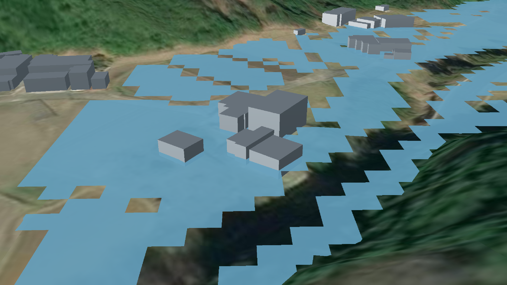

操作マニュアル
1 本書について
本書では、洪水浸水想定区域の時系列データ変換システム（以下「本システム」という。）の操作手順について記載しています。
2 使い方
2-1 ファイルの設定を編集する
設定ファイルの編集
システムを正しく動作させるために、リポジトリ内の main.py を開き、以下の変数を入力ファイルや設定したい内容に合わせて更新してください。
| 変数 | 型 | 更新内容 |
|---|---|---|
| input_path | str | 入力ファイルの入ったディレクトリ名に更新 |
| filename_end | str | 入力ファイルの共通するファイル名の末尾に更新 |
| output_file | str | 設定したい出力ファイル名に更新 |
| GSI_GEOID_FILE_NAME | str | インプットするジオイドモデルのファイル名に更新 |
| start_time | int | 設定したい時系列化の対象の最初の時間帯（分刻み）に更新 |
| stop_time | int | 設定したい時系列化の対象の最後の時間帯（分刻み）に更新 |
| year_t | int | 設定したい時系列の開始年（UTC）に更新 |
| mon_t | int | 設定したい時系列の開始月（UTC）に更新 |
| day_t | int | 設定したい時系列の開始日（UTC）に更新 |
| hour_t | int | 設定したい時系列の開始時（UTC）に更新 |
| min_t | int | 設定したい時系列の開始分（UTC）に更新 |
| flood_color | list | 設定したい色をRBGAで指定し更新 |
| rename_mapping | dictionary | 入力ファイルの属性名を確認し、その属性名に左項を更新 |
input_path = "./BP000_CSV/" #インプットするCSVファイルのディレクトリ
filename_end = 'm.csv' #インプットするCSVファイル名の末尾（※BP〇〇〇_△△△△△m.csv（例：BP001_00060m.csv）という形式のファイル名を想定しています。）
output_file = './output.czml' #アウトプットするCZMLファイルのファイル名
GSI_GEOID_FILE_NAME = 'gsigeo2011_ver2_2.asc' #インプットするジオイドモデルのファイル名
#読み込むファイルの開始時刻および終了時刻（※ファイル名の△△△△△mをベースとした分での指定）
start_time = 0 #開始時刻
stop_time = 1440 #終了時刻
##CZML開始の時刻（UTC）
year_t = 2025 #年
mon_t = 3 #月
day_t = 21 #日
hour_t = 0 #時
min_t = 0 #分
#浸水の色分け（[R,G,B,A]）
flood_color = [100, 160, 190, 230]
# CSVの列名の辞書（左側を読み込むCSVの属性名に変更してください。右側は変更しないでください。)
rename_mapping = {
'メッシュコード': 'MESH',
'標高': 'dem',
'浸水深': 'flood_depth',
'流速': 'flow_velocity',
'P1緯度': 'P1_lat',
'P1経度': 'P1_lon',
'P2緯度': 'P2_lat',
'P2経度': 'P2_lon',
'P3緯度': 'P3_lat',
'P3経度': 'P3_lon',
'P4緯度': 'P4_lat',
'P4経度': 'P4_lon'
}
2.2. Pythonファイルを実行する
設定が完了したら、以下のコマンドを実行してシステムを起動してください。
python main.py
または
python3 main.py
実行後の確認
- システムが正常に動作すると、指定したフォルダ内に出力結果が格納されます。
- エラーメッセージが出る場合は、必要なライブラリが正しくインストールされているか
pip listで確認してください。 - ジオイド・モデルが正しく読み込めない場合、ファイルパス (
GSI_GEOID_FILE_NAME) を確認してください。
3 出力データ
解析で出力されるデータは以下のとおりです。
| 機能 | 出力データ | 内容 | データ形式 |
|---|---|---|---|
| 洪水浸水想定区域の時系列データ変換 | 洪水浸水想定区域の時系列データ | 入力した洪水浸水想定区域を時系列へ変換したデータ。 | CZML |
3-1 洪水浸水想定区域の時系列データ
洪水浸水想定区域の時系列データはCZML形式で出力されます。
